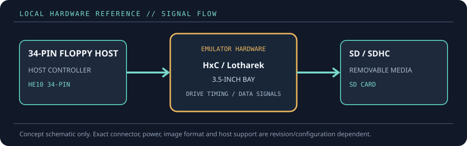

[ FLOPPY EMULATORS // IDENTIFIED HARDWARE ]
HxC SD Floppy Emulator Rev F
A model-specific record for a physical floppy-drive emulator. It distinguishes the emulator hardware, removable media and host-facing drive signals; firmware support alone does not establish compatibility with a particular machine.

MODEL IDENTIFICATION: PRODUCT RECORD: HxC SD Floppy Emulator Rev F. Compatibility is conditional on the actual host’s connector, controller, signal conventions, drive geometry, firmware and media configuration; do not infer fit from connector count or nominal drive size alone.
Recorded specifications
| Cataloged part | HxC SD Floppy Emulator Rev F |
|---|---|
| Manufacturer / project | HxC / Lotharek |
| Product family | SD-card floppy emulator, Revision F hardware |
| Drive bay / physical fit | Enclosed standard 3.5-inch drive-bay form factor; mounting screws and front-panel clearance still depend on the host chassis. |
| Host interface / power | HE10 34-pin floppy interface with Shugart- and PC-compatible modes; 5 V floppy power. SD/SDHC card storage and front-panel display/buttons. |
| Removable media / image format | SD or SDHC card, FAT32; HFE is the native HxC image format, with a broad set of supported floppy image formats and raw geometries documented by HxC. |
| Host compatibility | Many 34-pin hosts including PC-compatible computers, Amiga, Atari ST, Amstrad CPC, MSX, samplers, synthesizers, and industrial equipment; use the HxC compatibility list and host-specific configuration. |
| Variants and identification | Revision F is a distinct enclosed HxC SD board generation, not the compact HxC Slim SD listing already cataloged. Record the board revision, case, firmware, SD card and selected host configuration. |
Compatibility and handling
- HxC documentation lists many compatible platforms, but each host still requires the correct drive mode, jumper/configuration and image geometry.
- Do not infer exact image-format support from a generic SD-card reader listing: check the current HxC manual, firmware and format conversion guidance.
- The SD card is removable image storage, not original magnetic floppy media; preserve source images and note any conversion.
Before installation, compare the emulator’s exact revision and interface against the host service documentation. Confirm connector keying and pin one, power voltage/polarity, drive select, motor/disk-change signals, expected density and image geometry. Preserve a read-only copy of original disk images and configuration files before experimenting.
Model notes
Revision F is a distinct enclosed HxC SD board generation, not the compact HxC Slim SD listing already cataloged. Record the board revision, case, firmware, SD card and selected host configuration.
SD or SDHC card, FAT32; HFE is the native HxC image format, with a broad set of supported floppy image formats and raw geometries documented by HxC.
Sources & further reading
- AMIGAstore — HxC SD Rev F 3.5-inch bay product listingProduct-specific Rev F listing and physical/interface feature summary.
- HxC2001 — SDCard HxC Floppy Emulator user manualPrimary setup, media, firmware and image-format documentation.
- HxC2001 — supported machines and compatibility listMaintainer-published compatibility list with host-specific cautions.
Manufacturer statements describe product capability, not guaranteed operation on every revision of the named host. Confirm current manual, firmware and wiring before installation.